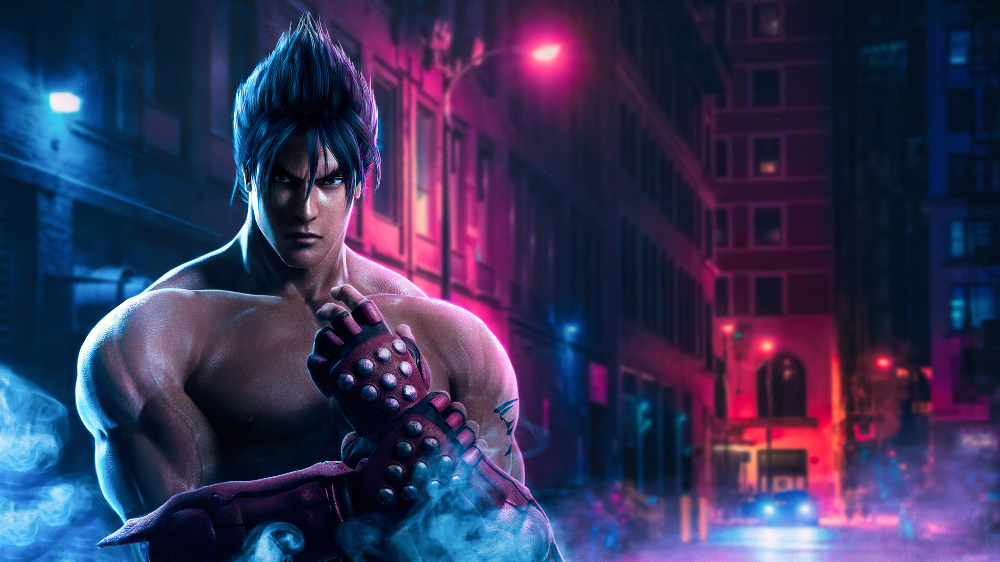

Jin Kazama
Debil Jin es su transformacion
Jin Kazama es un personaje ficticio de la serie de videojuegos Tekken, donde es el protagonista principal y el ganador de la mayor parte de los torneos a lo largo de la saga. Es un personaje que viste con un pantalón negro con llamas de tono amarillo y rojo, un cinturón de karate, calzado de vendas y guantes protectores.
Del personaje de Jin Kazama se puede decir sin duda que ha sufrido desde su primera entrega en Tekken 3 el cambio más drástico de todos los personajes de la saga Tekken, es decir, en su estilo de lucha; entre la entrega de Tekken 3 su estilo de combate era el Karate Mishima-Ryu + estilo Kazama-Ryu (en realidad karate estilo Shito Ryu) preservado en las demás partes de la saga por Devil Jin, y en Tekken 4, su estilo de combate cambia totalmente ya que Jin abandona el estilo Mishima y hasta Tekken 7, conserva el estilo de lucha que se le atribuyó en Tekken 4, el Karate Kyokushinkai.Por otro lado, el estilo de lucha del Jin Kazama en Tekken 3 se ha recuperado para otro personaje de la última entrega; Devil Jin, su alter ego diabólico. Además, Jin Kazama es uno de los personajes más carismáticos de la saga, lo que le ha valido para ser prácticamente el protagonista autoproclamado del juego, siendo el arquetipo de personaje que, aunque atormentado por su pasado, es justo y benévolo (a pesar de la influencia de su alter ego diabólico Devil Jin).
